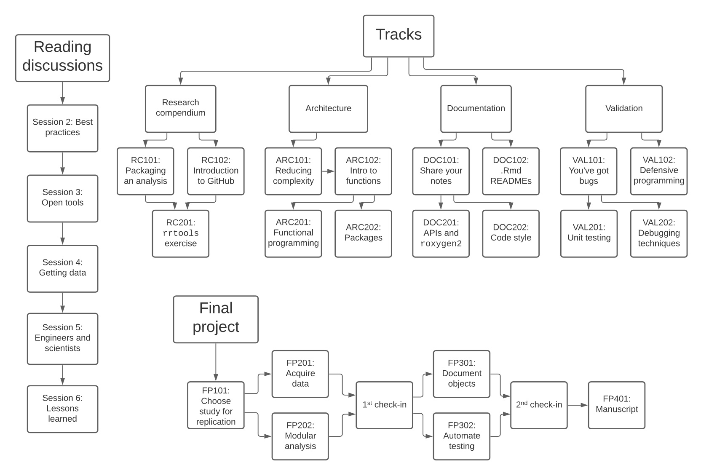

Teaching
BIOS 207: Just Enough Software Engineering (for Scientists) [aka jese4sci]
I developed and taught jese4sci to address both scientific and pedagogical challenges. The jese4sci curriculum contained the essential software engineering skills that facilitate open science, like version control and documentation (see course map below). Because most students come in with different experience levels and goals, I designed the course to be self-directed and mastery-oriented, which allowed students to move at the pace and focus on the material best suited to their growth. Here’s an example lesson and assignment from the validation track on GitHub.

The Carpentries
I’m a certified Carpentries instructor since 2019. I’ve taught Software and Data Carpentry workshops in-person and online for the Stanford Libraries and other other organizations.
Research Mentorship
I’m passionate about sharing my data skills with other scientists to help them develop their own abilities and make their research more impactful. I’ve mentored scientists at all career stages, from undergraduate and graduate students to post-docs and faculty. These efforts supported publications in The Journal of Experimental Biology, Nature Communications, and Current Biology. If you’d like to develop your data science skills and have a research project that you want to be more open and reproducible, please contact me!
Tutorials
I make tutorials for R and data science workshops. You’re welcome to repurpose these for your teaching.